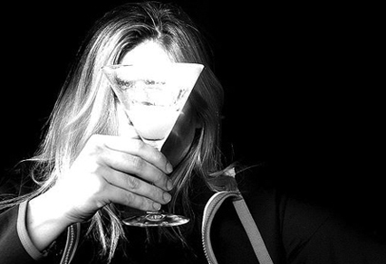

25% off Jazz Hands Vodka: locally-made vodka bliss.
Jazz Hands Vodka is the newest product from local distiller Awesomesauce. Bright and vivid, it's the perfect warm-weather treat. We've concocted some pretty wonderful custom cocktails to highlight it (try the White Devil or the Regret). Or you can go classic with our ultra-fresh Lemon Drop (made with organic citrus).
